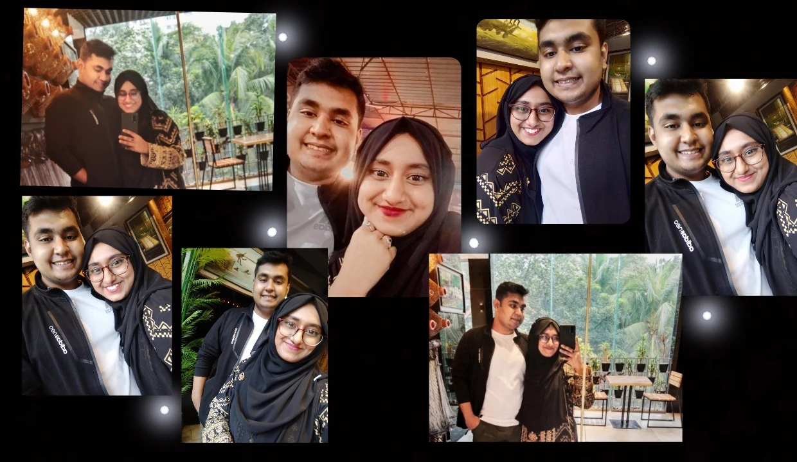
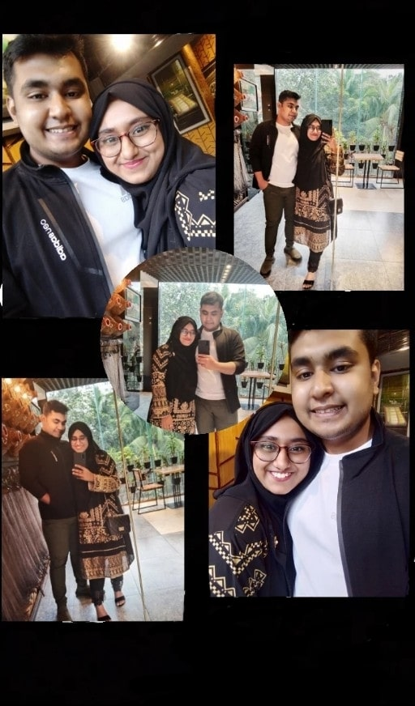

Treat you better!

Your magnificence astounds me. I can't decide what it is about you that I adore the most. Your eyes, nose, lips, and appearance all contribute to your attractiveness.
In my opinion, there's no one component of you that stands out above the others.
I'm in awe of every aspect of your being. It's a pleasure to meet you. Eu littol happiness.
You have a beautiful pair of eyes. I become drowned in an ocean of endless optimism, fulfillment, and harmony whenever I stare into them.
This hope gives me peace, happiness surrounds me at all times, and harmony reminds me that I'm somewhere above the earth
From Your Oi
Getting lost in your eyes is one of the most wonderful experiences in the world. I was born to stare at you, and I would do everything to go back in time and meet you sooner. You have the most gorgeous eyes that penetrate through my soul and mind to bring out the best in me, and I would never give you up for anything in the world. I adore you more than I adore life itself. I had no clue such things as sweetness and laziness existed until meeting you. I'm like a unique language that only you comprehend. No one understands me like you do, and no one makes me happier than you do. You already know what I need without having to think about it. Because of your concern, love, and compassion, I am your open book. Thank you very much!
I haven't spoken it in a long time, but I adore everything about you. I like your hair, your sense of style, the way you make me smile, but most of all, I adore the way you make me feel alive. I can't thank you enough for making me feel like the luckiest and most wonderful person on the planet. Every day, I try to be the guy you need because you deserve all the happiness in the world.
appreciation
I just wanted to say how much I appreciate having you in my life. It means a lot to me that you helped me get through bad times and that you were there to help me enjoy good times.
Thank you for being a part of my life. I think I'm very lucky to have you by my side. Every time you do something nice for me, I don't forget.
I don't know what I did to get someone as good as you, but I will always be grateful for your love, support, and kindness. I will never forget how you made me feel.
Thank you for being who you are and for letting me be a part of your life. I love you! When you're not around, my world looks dark. There is a haze even when there are no clouds in the sky.
In the world before you, there were street lights, stars and the moon and sun. Now, you seem to be the most important thing in my life.
It would explain why I feel so warm when I'm with you, and why you give me the energy and courage to keep going in my darkest hours. So I know I'll always find my way back to you.
Memories

So, after all this, the only thing i wanna say that is
I Eu littol happiness huh!
Many more moremories still to create and Cherish.
Cutie Ekta!
To my beautiful
You are the greatest gift I have ever received. I wish you good health and happiness on this wonderful day and for the rest of your life.
I would be the happy owner of a wonderful garden if wishes were rose flowers, since I have millions of beautiful wishes for you.
I'm enticed and surrounded by your touch, smile, and existence. A full-blooming Gardenia can't even compete with your presence in the space when it comes to sensation.
I tried to think of everything I like and love about you, but the list is lengthy and will go on eternally. It seems like you are growing smarter and more lovely by the day.
Here are some kisses in advance to the love of my life. I love you for all that makes you the unique person you are in my life...
My flower, I wish you a happy birthday. --OiShui
Anniversary

There are a certain amount of hours in each month. Right now, it's around 730 hours. Of those 730 hours, how many were spent with one another? I don't know what I would have done in the 730 hours I've spent thus far if I hadn't met you.
It's hard for me to imagine our first meeting was a month ago.

....... -- From your OI

As I believe we will be together for the rest of our lives, I want to show you all the wonderful things this planet has to offer. I just have one thing to say to you on this wonderful day: I am madly in love with you.
Thank you for making it one year since Our oibui day.
I'll never comprehend why you selected me over many more successful and handsome guys who were after you... Nonetheless, I appreciate you giving me a chance and putting up with my pranks. You have made me the luckiest man in the planet. Kudos on our anniversary!
Ittu try...
There are a lot of options in life, but the only thing I want to do is love you. I'll do everything to keep you happy, since I care about you and want to see you happy. Because your love is my greatest possession, I will cherish it till the day I die.